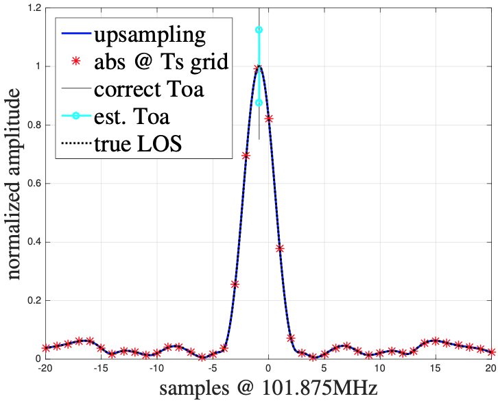
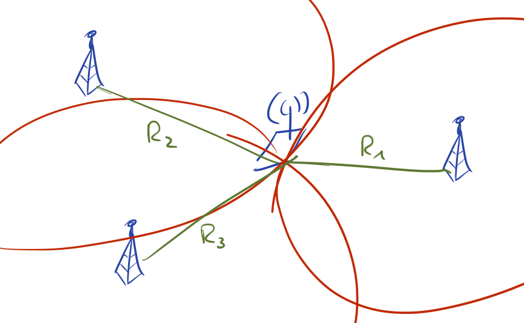
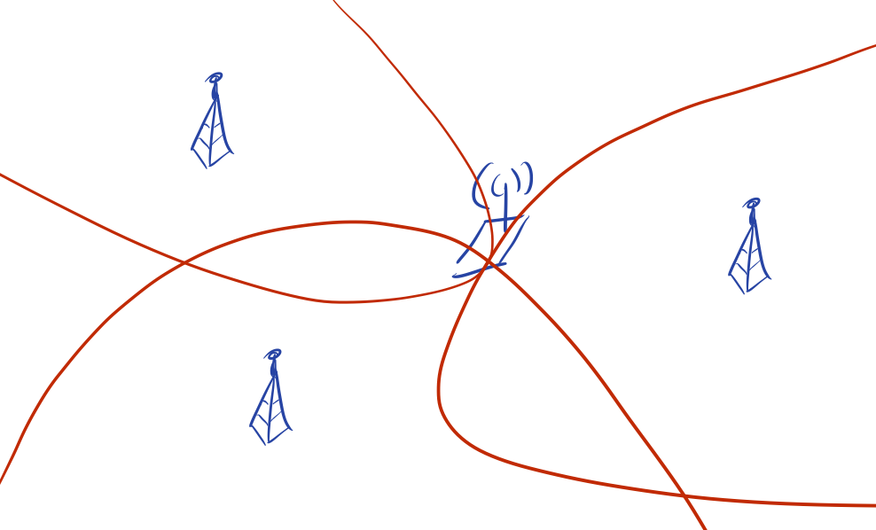
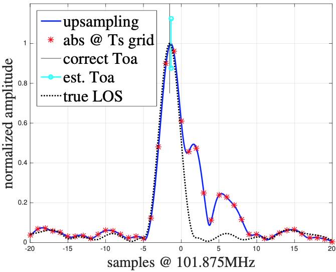
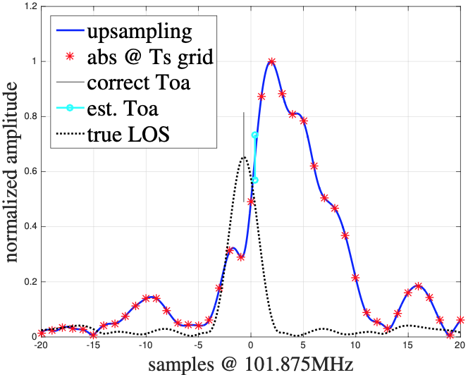
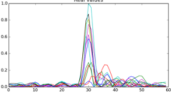
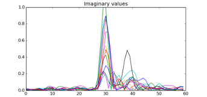
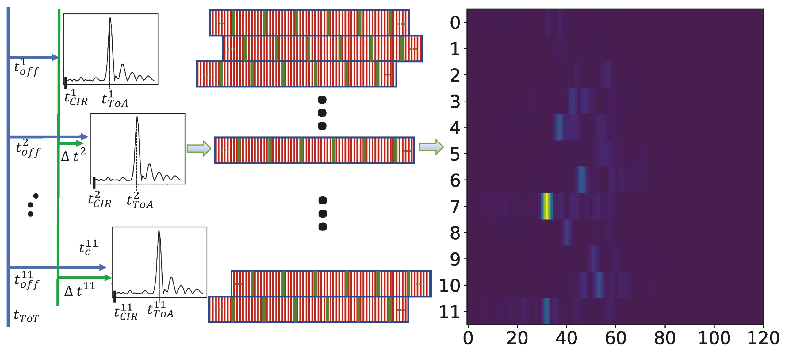

Object tracking and localization is an important feature for many applications in industrial applications, such as the tracking of forklifts and goods in intra-logistics environments, see Figure 1. Such industrial environments often include large racks and crowded spaces. Radio-based locating systems offer prominent unique selling points such as a large area coverage, availability, and robustness against bad lightning conditions or occlusions that make them beneficial over alternative approaches, such as optical outside-in tracking with cameras or optical inside-out tracking using e.g. LIDARs.
In many (local) radio-based locating systems mobile tags emit radio signals. The time-of-flight (or sometimes the time-difference) of such signals is determined at stationary receiving units. With Bayesian filters (such as Kalman or particle filters) we can estimate a two- or three-dimensional position from the multilateration of the time of arrival of the signal at the different receivers. Optimized channel and filter parameters are crucial to yield a highly accurate and robust locating system.

© Fraunhofer IIS
How to estimate a position?
A mobile transmitter emits radio signals that we detect at a multitude of receiving antennas. Usually, the received signal is auto-correlated with the known signal sequence which yields a correlated signal that we call the channel impulse response (CIR). You can see an exemplary CIR (baseband signal with 20 MHz bandwidth, sampled at approx. 100 MHz, detected and autocorrelated) in Figure 2 below.

From this CIR, we can estimate the exact time of arrival of the signal burst at the receiver. We have to analyze the window and determine the position of the maximum correlation peak (in the exemplary CIR window in Figure 2, this is around -2ms). Since we also know the actual time offset of the window (which we usually know when we cut this window), we can estimate the ToA of the signal at a particular receiver.
However, in practice it is not easy to achieve the necessary level of time synchronization between the receivers and the mobile transmitter. For instance, clock shift and drifts introduce errors in the ToF estimation that considerably deteriorate the estimated distances. In practice, we therefore use a slightly different method: time-difference-of-arrival (TDoA).
Alternatively, we can estimate the distances of the mobile transmitter to the receiver units using two-way ranging (TWR). TWR uses the most simplistic idea: we exchange messages between the mobile tag and the stationary receiver and measure the round trip time (RTT) of the message. From this RTT we can directly calculate the distance between those two. The hardware footprint is low as the clocks of the receiver and the mobile transmitter do no have to be exactly synchronised. We just have to synchronize the channel access. However, this is also the general disadvantage of this approach: to estimate a single position, 2 messages (back and forth) must be sent between 4 recipients and the mobile transmitter (=8 messages. As the channel may be shared to locate multiple mobile objects, the positioning update rate drops quickly due to the increasing communication load.


The key idea is to not only estimate the Euclidean coordinates of the mobile transmitters but also the time-of-transmission (ToT). To obtain the ToT, we again detect the ToAs of the signal at the receiving antenna now. But know we determine the time difference between the particular ToAs to estimate the position. From here, a hyperbolic trilateration estimates both the ToT of the signal and the Euclidean coordinates of the object. The use of TDoA-based significantly reduces the footprint of synchronization as only the stationary receivers have to be synchronised (which is easy to achieve in practice). Note that to additionally estimate the ToT we need at least one more receiving antenna to estimate a position in two (4 receivers) or three (5 receivers) dimensions.
As usual, there are a number of effects that add noise to certain ToA estimates. We cannot just “calculate” the solution. Instead, common approaches approximate an optimal position by finding a solution that minimizes the residual error. On a set of ToAs we can either run a classic optimizer (such as Least-Squares or Levenberg-Marquardt) or add a series of consecutive ToA-sets to a Bayesian filter (such as a Kalman filter) to gain more knowledge about error models of the dynamics of the systems.
Challenges of Position Estimation
However, in practice there are various sources that add noise to our signals, resulting in massive destruction of the signal processing pipeline.
First, there are usually hardware setup constraints that even pose a theoretical impact on the system performance. This includes a limited bandwidth of the baseband signal and, often chosen in further consideration, a limited sampling frequency of the signal at the receiver units. This introduces a wrong estimate of the real ToA because the actual ToA is most likely between the sample points of the signal (see the red dots in Figure 2). This is usually solved by a clever and informed up-sampling of the signal (see the blue up-sampled signal in Figure 2). However, this still leads to a ToA-estimation error. A second problem is the transmitter's limited update rate, i.e., the frequency at which the transmitters burst signals that we use for localization. This is a major problem with round-trip-time-based localization. For instance, when we measure the distance of the mobile transmitter to all the antennas in succession, we derive distances that do not correspond to a single position if the mobile transmitter is not stationary. When a mobile transmitter travels at a higher speed, this can significantly affect the multilateration of a position from these consecutive measurements. Generally, this is not a problem with TDoA-based systems, since the signal is only sent once and received at stationary receivers. However, TDoA-based systems are affected by the granularity of the receiver synchronization. While we can calibrate cable length, etc., general clock skew between the receivers add an error if the ToAs are estimated with this small skew as a direct result. Wired synchronisation (with a fiber-optic cable) works better than wireless synchronisation, but is not always possible in practice.
Third, there are may deteriorating elements that affect the signal while it travels from the transmitter to the receiver. Such (linear of non-linear) elements affect the ToA estimation and add non-linear effects. The signals are attenuated or scattered due to objects in the immediate vicinity. Metallic surfaces also reflect signals and introduce multipath effects: parts of the received signals stem from different routes of the original signal through the environment. If such reflections lead to considerably different time-of-flights (ToFs) we can see such paths in the CIR: there are more (many) different peaks that we can identify, see for instance Figure 4(a) below. Besides the (strong) direct path (the first peak), we receive portions of the signal along other routes (at least 2 more) for which we can also identify ToAs.


However, in many cases it not so easy to distinguish between different peaks in the correlated signal. For example, see a much more complicated situation in Figure 4(b). There are many multipath components (MPCs) that form an MPC cluster after the real ToA peak. It is hard to identify the first peak in the signal – and gets even harder with smaller delays of the MPCs. In contrast, when the direct connection from a transmitter to a receiver is blocked (non-line-of-sight, NLOS) the correct signal portions get attenuated while the reflection do not.
There are a number of solutions in the literature to estimate the correct ToA from CIRs. The most simplistic idea is a threshold (identify the amplitude of the maximum correlation point and look for the first peak (saddle-point) in the window that reaches a certain threshold in relation to the maximum point). While this is both very efficient and easy to implement, it often suffers from estimation errors. A more elaborate idea searches for the first inflection point (where the second derivate is zero) and uses this point along with the peaks to estimate the ToA. This increases the robustness in practice considerably (while the additional computational effort is negligible), but is still prone to error if there is no strong line-of-sight signal. Many ideas have also been proposed to use (statistical) features (such as maximum energy, zero crossing), and post-processing (such as unscented Kalman filters). With additional computational load, they enable a much better analysis of the CIR to estimate a ToA.
Our Research Directions
Direct CNN-based Position Estimation
An obvious idea (but it must be said: back in 2016/2017 it was not that obvious at all) is to use the channel impulse response data (from all the receivers) and to feed it into a convolutional neural network (CNN). CNNs have been (and still are) very successful in hierarchically extracting features from low-level data (on images that would be edges, circular patterns, etc. on early layers and abstract features such as faces, persons etc. on higher layers, and the basic idea is to use them to work directly on the CIRs without extracting any statistical features manually. From a channel impulse response we obtain two streams of values in the complex domain:


In our experimental data we have a set of 12 receivers that hence produce 12 such signal pairs per signal burst. Such a signal set (theoretically) encodes all the environmental signal propagation from the mobile transmitter to the stationary antennas. One set of real and imaginary CIRs can also be assigned to a unique label that is defined by a x, y, z position and a time of transmission (TOF). Note that in the images above all the CIRs are centered - usually we have highly synchronized receivers and the CIRs have different time offsets.
So if we do want to encode all the information that corresponds to one (t, x, y, z) sample, we need to stack all the CIR pairs together and correct their time synchronisation using a per-CIR padding scheme:

So what you see is that individual CIRs (per line) have a specific toff. We "normalise" the timings of the CIR by taking the smallest toff of the set, resampling the individual CIRs (as the time resolution of the CIR is smaller than those of toff), padding them (i.e., moving them to the right, filling the signal values with zeros, accordingly), and resample them again to their original resolution. From that we obtain an image-based representation of all the channel impulse responses, padded to align them in time correctly. See Figure 6 on the right side.
Further Reading
- Track 7: Channel Impulse Responses (Offline Challenge @IPIN2020 and @IPIN2021)
Related Papers
- Delay Estimation in Dense Multipath Environments using Time Series Segmentation @WCNC2022
- Estimating TOA-Reliability with Variational Autoencoders @IEEE Sensors, 2021
- Robust ToA-Estimation using Convolutional Neural Networks on Randomized Channel Models @IPIN2021
- Accuracy-aware Compression of Channel Impulse Responses using Deep Learning @IPIN2021
- NLOS Detection using UWB Channel Impulse Responses and Convolutional Neural Networks @ICL2020
- A Deep Learning Approach to Position Estimation from Channel Impulse Responses @Sensors, 2019
- Recurrent Neural Networks on Drifting Time-of-Flight Measurements @IPIN2018
- Convolutional Neural Networks for Position Estimation in TDoA-based Locating Systems @IPIN2018 (Best Paper Award)
We also plan to release a dataset that may serve as a general benchmark to add ToAs from CIRs oder positions from a set of CIRs.